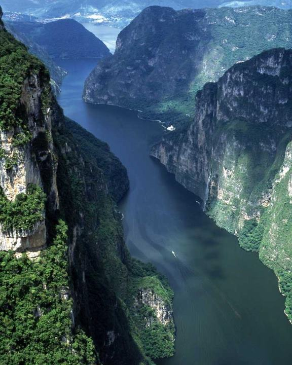
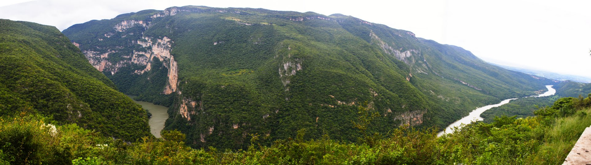
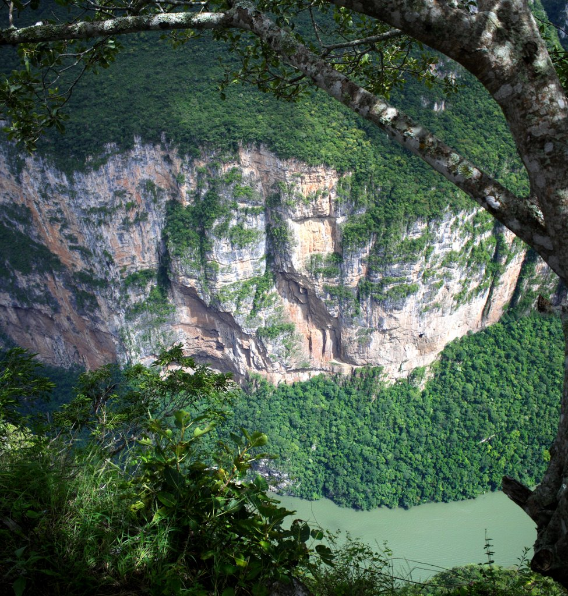
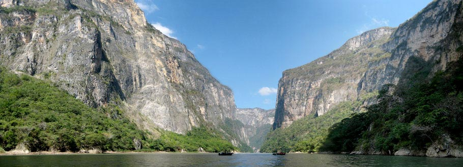
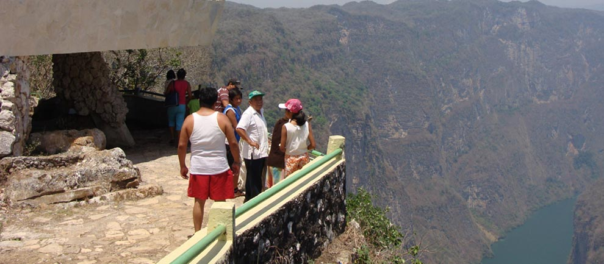

El imponente Cañón del Sumidero puede ser admirado, vía terrestre, a través de los Cinco Miradores con los que cuenta: la Ceiba, la Coyota, el Roblar, el Tepehuaje, y los Chiapas, brindando una perspectiva diferente del lugar. En el primer mirador, “La Ceiba”, se vislumbra hacia la derecha Chiapa de Corzo, y ya en un plano más cercano se percibe con claridad, el segundo mirador, “La Coyota”, se observan las proporciones de las inmensas paredes; en el mirador del “Roblar” es preciso caminar por un largo sendero empedrado entre árboles y arbustos, que se presta para contemplar las aves y otras especies de fauna. El mirador “El Tepehuaje”, el cuarto del recorrido, permite ver gran cantidad de aves que se balancean, apenas con extender sus alas, por las corrientes de aire que transitan por la parte alta del cañón y el mirador “Los Chiapa”, en donde también se aloja el restaurante “El Atalaya”, el último por estar localizado en uno de los recodos más pronunciados que las paredes forman, prácticamente permite observar el cauce del río en unos noventa grados, que desaparece a la izquierda, en una superficie confinada cientos de metros por debajo del mirador
Cada mirador se encuentra ubicado a lo largo del cañón del sumidero.
Hacer el recorrido vía terrestre partiendo desde la capital del Estado, puede llegar en automóvil tomando la carretera de Tuxtla Gutiérrez “calzada al sumidero” hasta los miradores del Cañón, desde donde se puede admirar la majestuosidad del Cañón desde sus distintos miradores.
Apreciación de especies endémicas, Avistamiento de aves, fauna y flora, Caminata, Deportes Extremos, Ecoturismo, Excursionismo, Fotografía, Lanchas





posicione el mouse sobre las imágenes